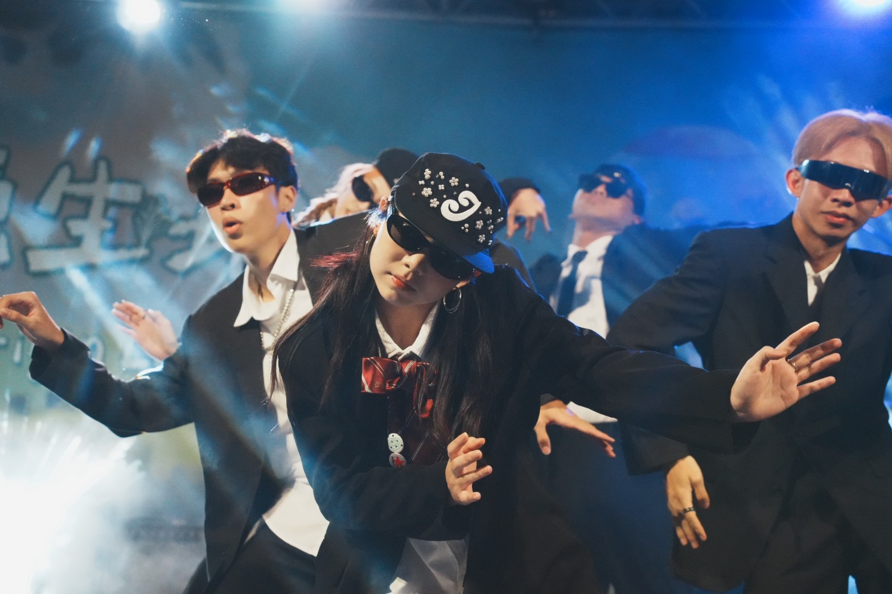
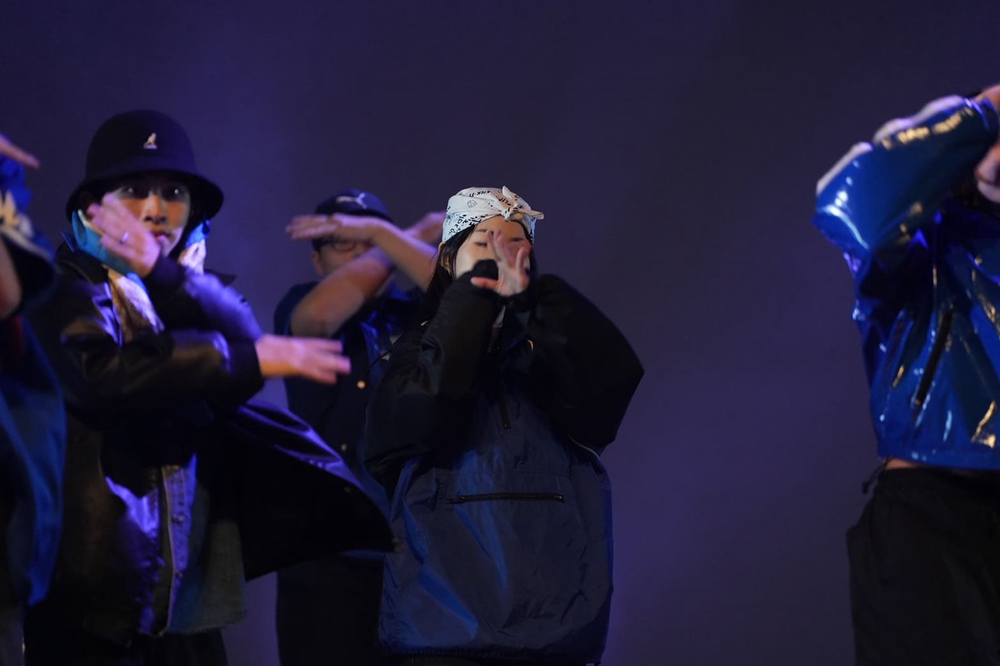
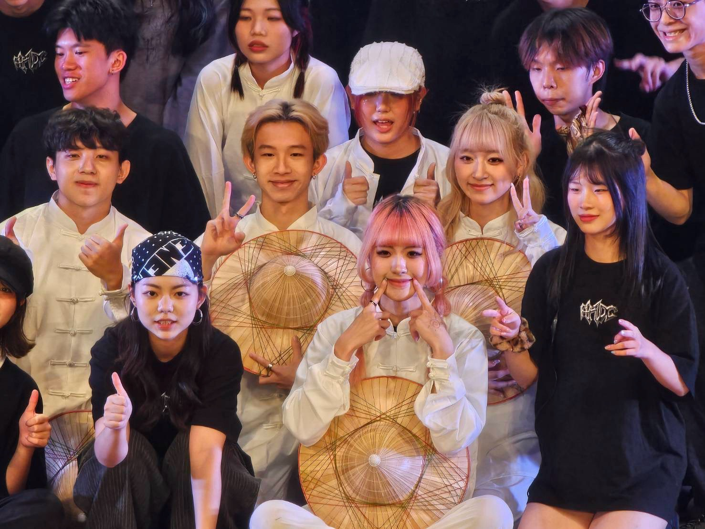
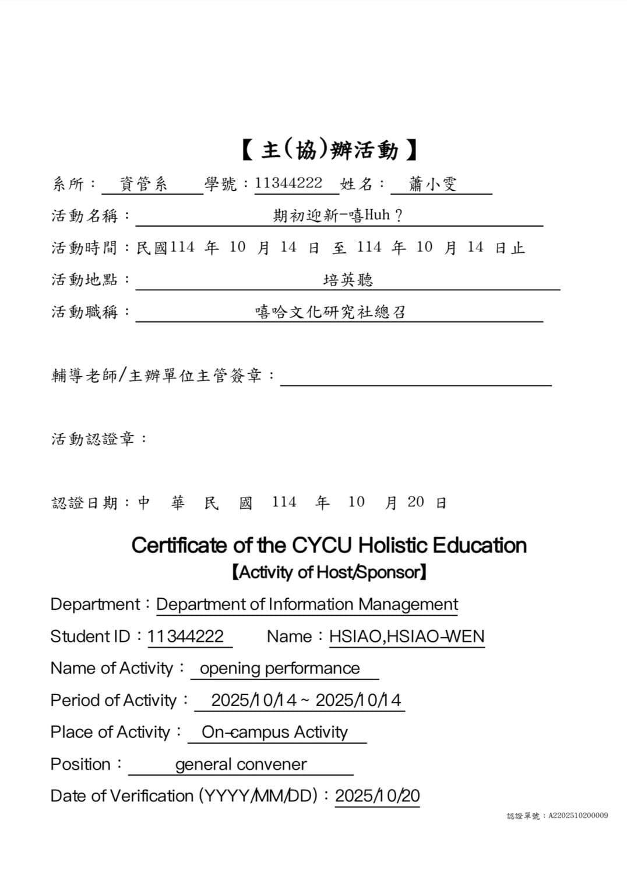

蕭小雯 @hw.enn_
中原大學資管系
自我介紹
"做或不做都可能會後悔所以要勇敢一點"
我是蕭小雯，今年19歲，作為一名資管系的學生，我深刻體會到資訊科技對於我們的影響力，因此我正在努力學習與資訊有關的課程，希望透過深入了解資訊科技，來更理解如何有效地運用人工智慧工具。
我覺得我是個深思力行的人，在開始一項任務前我習慣先規劃設想好我的執行方式，追求條理並考量後果，這能讓我進行的過程中比較順利，透徹地分析每項步驟或計畫可以減少我對完成任務的壓力。
同時我也是個堅毅勇敢的人，我不想因為沒自信或害怕做不好就不去做某件事，例如社團參加比賽需要徵選，雖然跟參加過的人比起來落差有點大，但我還是去挑戰了，我非常慶幸自己有去，因為在過程中發現自己在一年中跳舞的能力進步非常多，即便結果有些遺憾，不過也更讓我確信有跨出那一步去做是正確的選擇。
專業技能
程式語言能力
- Python
- Java
- Html
- Css
美編文書能力
- Procreate
- Canva
- Word
- Excel
其他領域能力
- TOEIC 670
- 影片剪接
- 設計企劃
- 專案管理

社團經驗


跳舞是我從高中一直以來的興趣，因此升上大學我馬上加入了嘻研社，參與社團之餘我不僅提升跳舞的實力，也收穫更多不同面向的能力。
我增強了領導與統籌能力，當上幹部後我們舉辦的第一場迎新表演，是由我負責主導的，要規劃整場活動的時程安排，以及了解每個崗位的工作事項，還要設想可能發生的狀況，並且提前想好解決辦法。
左邊的圖片呈現的分別是今年的社博表演、上學期的大成表演與本屆的迎新活動照，而我表演過的舞風有Hiphop、Popping及Locking，目前也一直不斷在精進自己在這三個舞風的能力。
